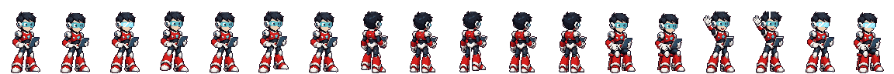

Art orisinal (AI-generated)
Semua sprite karakter (7 kru), pose duduk/lambai/tampak belakang, konsep latar, prop dan konsol Command Center di versi ini adalah art orisinal hasil generator gambar AI, lalu diproses ulang dengan script sendiri (key background, palet 16 warna per karakter ala SNES, downscale ke ±80–88 px, outline, frame jalan/kedip/bob/lambai dibuat secara program).
Gayanya terinspirasi game aksi robot era SNES/PS1, tapi bukan aset Capcom/Mega Man — tidak ada sprite, tile atau karakter resmi yang dipakai atau dijiplak. Mega Man adalah merek dagang Capcom; proyek ini tidak berafiliasi.
Lantai, dinding, konsol, kapsul recharge, energy core, teleporter, efek beam teleport, layar animasi dan pencahayaan siang/senja/malam digambar secara prosedural lewat kode (canvas 2D).

Musik latar assets/audio/hq-theme.mp3 adalah file MP3 dari pemilik markas (dikompres ulang ke 112 kbps). Diputar berulang dengan volume 40%, dan bisa dimatikan lewat tombol speaker di pojok kanan atas (pilihannya diingat).
| Font | Pembuat | Lisensi |
|---|---|---|
| Press Start 2P | CodeMan38 (Cody Boisclair) | SIL Open Font License 1.1 |
| Pixelify Sans | Stefie Justprince | SIL Open Font License 1.1 |
File font dipakai bersama dari ../fonts/; teks lisensinya ada di FONTS-LICENSE.txt.
Renderer canvas, pathfinding A* dan kamera mengadopsi kode village2d milik sendiri. Pipeline sprite ada di tools/ (Python + Pillow/NumPy).